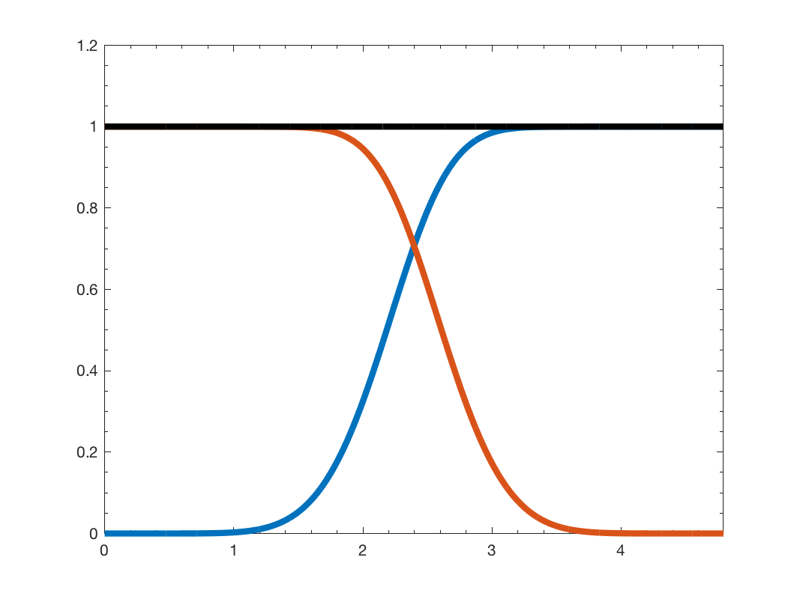

g = gsp_design_regular( G ); g = gsp_design_regular( G, param );
This function creates a parseval filterbank of \(2\) filters. The low-pass filter is defined by a function \(f_l(x)\) between \(0\) and \(2\). For \(d = 0\).
For \(d = 1\)
For \(d = 2\)
And so on for the other degrees \(d\).
The high pass filter is adapted to obtain a tight frame.
This function will compute the maximum eigenvalue of the laplacian. To be more efficient, you can precompute it using:
G = gsp_estimate_lmax(G);
Example:
G = gsp_sensor(100); G = gsp_estimate_lmax(G); g = gsp_design_regular(G); gsp_plot_filter(G,g); [A,B] = gsp_filterbank_bounds(G,g)
This code produces the following output:
A =
1.0000
B =
1.0000

param is an optional structure containing the following fields